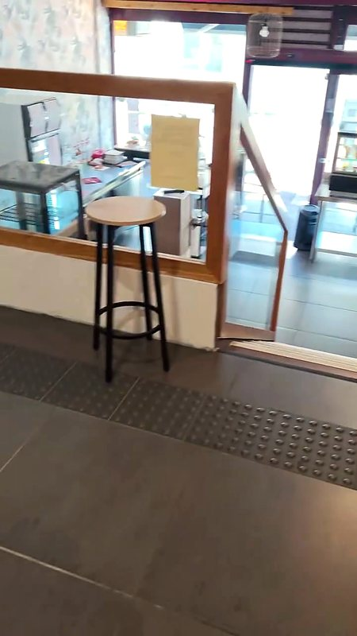
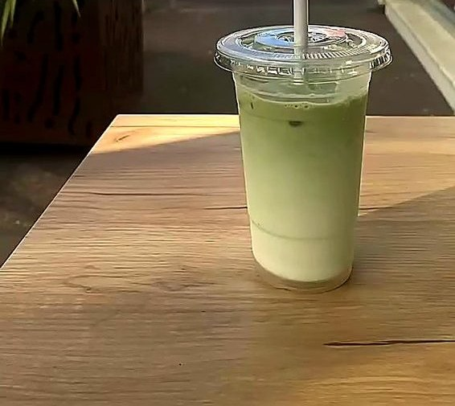
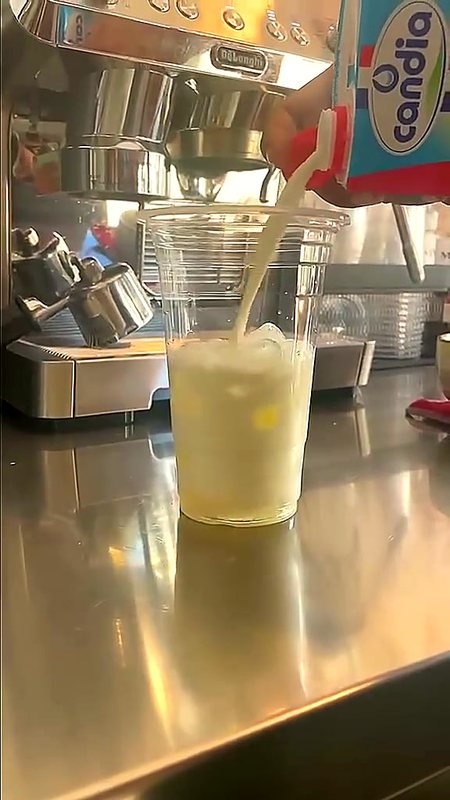
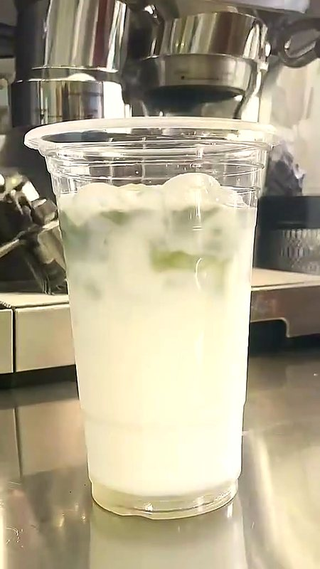
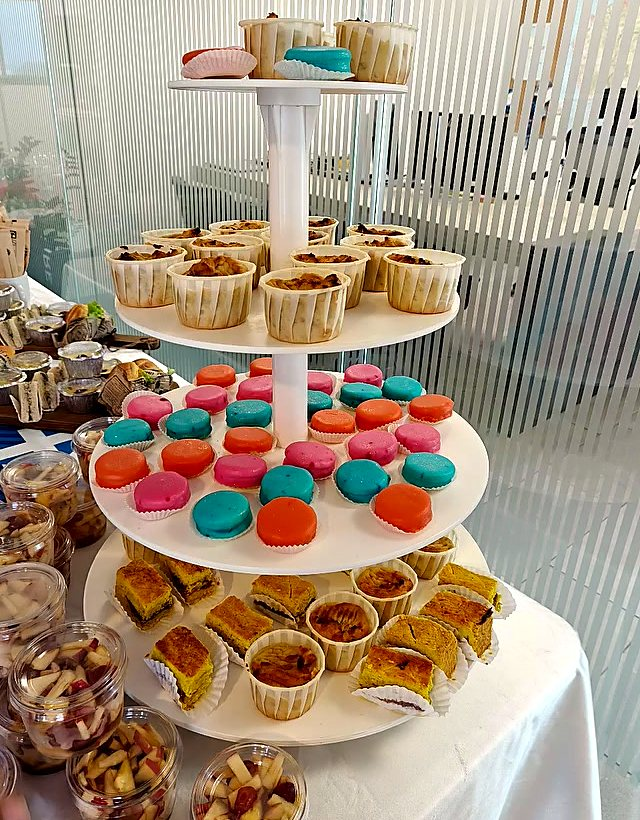
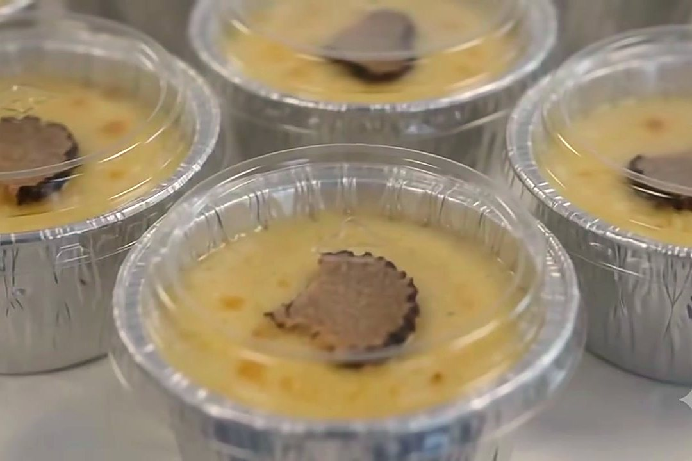
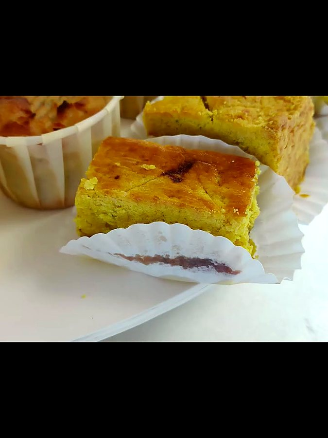
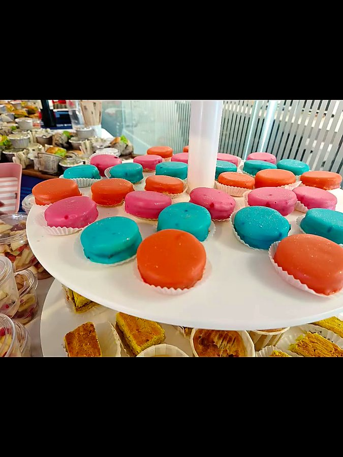
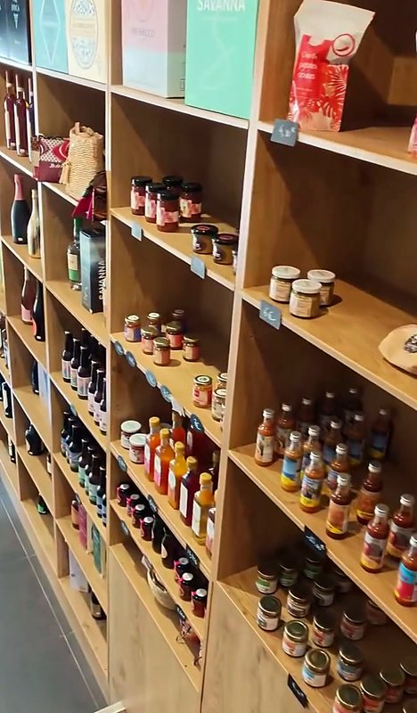

Petites douceurs, grands moments
Bon café, bons plats, belles pauses : ici tout est fait maison, au 18 rue du Maréchal Leclerc.
Ici, on savoure le bon !
Au cœur de Saint-Denis, tout près du cabinet de radiologie Les Alizés, Cassonade Café vous accueille du lundi au vendredi pour un café, un plat du jour, un cookie ou une boisson fraîche.
Derrière le comptoir, tout se prépare maison, du salé au sucré, jusqu'aux tartes de la cheffe Murielle.

Préparé sur place avec soin
« Une boisson fraîche, gourmande et pleine de caractère qui va faire sensation cet été ! » Et à côté, les classiques de la maison :



Du sucré au salé, tout est fait maison
Buffets, apéros dînatoires, douceurs gourmandes : Cassonade Café s'adapte à vos envies, à votre budget et à votre format. Le café peut aussi être privatisé pour vos événements.
Petits sandwichs aux rillettes de sardines, quiches boucané et pommes de terre, gâteau ti son, cookies au chocolat au lait, thé glacé et citronnade maison.
Publication de juin 2026Gratin chouchou & courgettes, soso maïs saucisses, club rillettes de sardines… puis napolitain, gâteau patate et pâté créole au gayavier.
Publication de mai 2026Mini sandwichs frais, verrines de fruits, macarons colorés, bouchées salées & sucrées, avec une présentation soignée et moderne.
Publication de mai 2026


En images


← Faites glisser pour voir la suite →
À emporter, à offrir
Sur les étagères en bois, de jolis produits à emporter, et des saveurs péi comme les sirops Le Goût Nout Zarlor mis à l'honneur en février 2026. Pour la Saint-Valentin, la maison a même composé des packs à personnaliser selon les goûts et le budget de chacun.
Ils en parlent
Cassonade Café à Saint‑Denis 97400, quelle belle découverte ! Tout est 100 % maison, préparé avec des ingrédients nobles — on sent l'amour du produit à chaque bouchée. L'accueil est chaleureux, le sourire toujours présent et l'ambiance tellement conviviale qu'on a envie d'y rester plus longtemps.
Charles S. · avis Google
Une quiche chèvre épinards délicieuse ! De très bons ice teas aussi, et un joli choix de cookies. Et le service très agréable, on y repassera avec plaisir !
Sophie M. · avis Google
Pour les fêtes
Repas de fin d'année entre collègues, réveillon en famille : un buffet sucré et salé, fait maison, pensé selon vos envies et votre budget.
Un pack gourmand composé avec vous, comme pour la Saint-Valentin, ou simplement une belle pause chez Cassonade Café à offrir.
On vous attend
| Lundi – vendredi | 7h – 17h |
| Samedi – dimanche | Fermé |